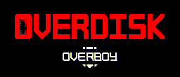

OVERDISK 💿
Made In 3 days by Overboy for the Devolver Digital Game Jam.
THROW THE DISKS IN THE PORTAL TO GAIN XP AND UPGRADES
- WASD/ZQSD : Movement
- Left Click : Shoot with current weapon
- Right Click or MAJ : Roll
- E/Mouse wheel Button : Change weapon (you need to unlock weapons)
- Space : Shockwave (ability to unlock)
LEVEL UNLOCKS
- LEVEL 10 : Pistol Weapon
- LEVEL 20 : Dodge bullets thank to your dash (replace roll)
- LEVEL 30 : Shotgun Weapon
- LEVEL 40 : Shockwave ability, press SPACE to create a shockwave that push disks
- LEVEL 50 : Uzi Weapon
- LEVEL ??? : ???
I had a blast developing this little game.


You must ask permission if you want to upload this game on your own website.
contact : overboy.games@gmail.com
I'm also available for freelance work More info here

Comments
Log in with itch.io to leave a comment.
song?
what is the final upgrade?
i like the game it's fun
very easy game you can just stay in corner and hold the left click
i dont think you get the point of the game
what is it?
you have to hit the disks into the portal
yea I do it I stay in the corner and the disks bounce and go to the portal easily
Excellent!
This a banger
m addicted
should make a downloadable version for this 1 of my favourite itch games as a hobby game dev i strive to make something this good some day hah
THE GOOD SOUP!
Great Job on this one, very fun
This game is so fun :D
I love it! :D Great job with the polish, and the graphics! :D
cool game, but i want to know how to download it
u are amazing u and your team has made gems
Thank you !
i like this game but i suck
Every time I boot up the game it gets stuck at the 100% screen, ive tryed re installing it but I cant play, someone help please?
(Edit: can get it to run in browser)
Wish I could go in fullscreen but the button never works
WOW. This game is very good. And only made in 3 days. Inpressive. Loved the makeground music, and the pixel art is very good. The idea is good, and the gameplay is funny.
So cool and polished
I love your games ! This game is awesome
Thank you :)
Overdisk💿
make a port to the switch
GAMEPLAY
https://www.youtube.com/watch?v=FXyyo1LIiO4
Nice :D
I need the music for this game
SICK
thanks !
This is an absolutely FANTASTIC GAME with great art direction, music and game feel. Keep it up!
thank you ! :)
es muy bueno y la musica combina con el juego lo que mas me gusta es que tu sangre se queda cuando mueres me quede en nivel 97 nota: lo jugue en newgrounds
There should not only be upgrades every 10 levels, but checkpoints too
like in mob inc as in mob inc should have checkpoints to
how can i download this game
hooked on this game just wish the instrumentals were a little less repetitive
this game is sick
amazing!
I don't really like the music, but it is a great game!
this is the best game ever
I love this game
I always play your games.. Out of all the games i've played Your my favorite Creator! I've been on this website for about 6 months now and each day Ill play a game from yours, when i'm on break in school. Great games dude. :)
I think this is the kindest comment I've got on one of my games. Thank you ! :)
I really wasn't thinking you would respond...WOW..- Like- your my Idol because I ADORE Video games, and your games, are I mean...Fantastic! Keep up with the great work! I never thought this would happen..
amazing game
very nice
The game is stuck on 100% for me for some reason. Any idea why? I'm on windows btw.
Did you try to refresh the page ? It happened to me only one time and refreshing the page worked for me :)